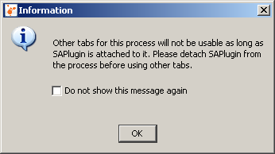
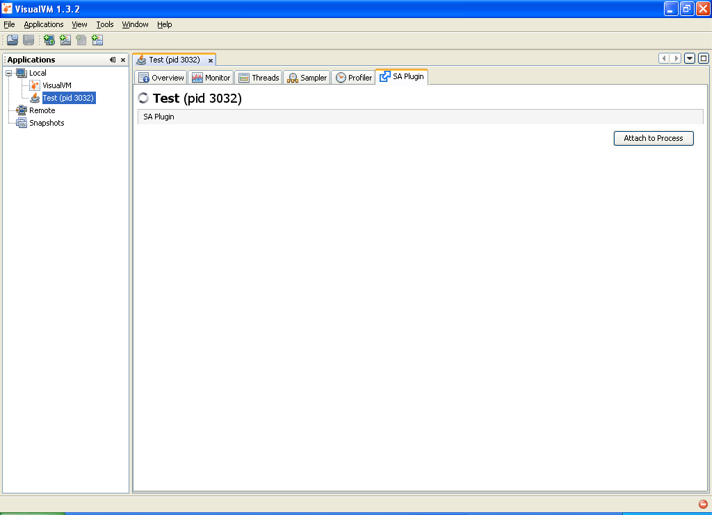
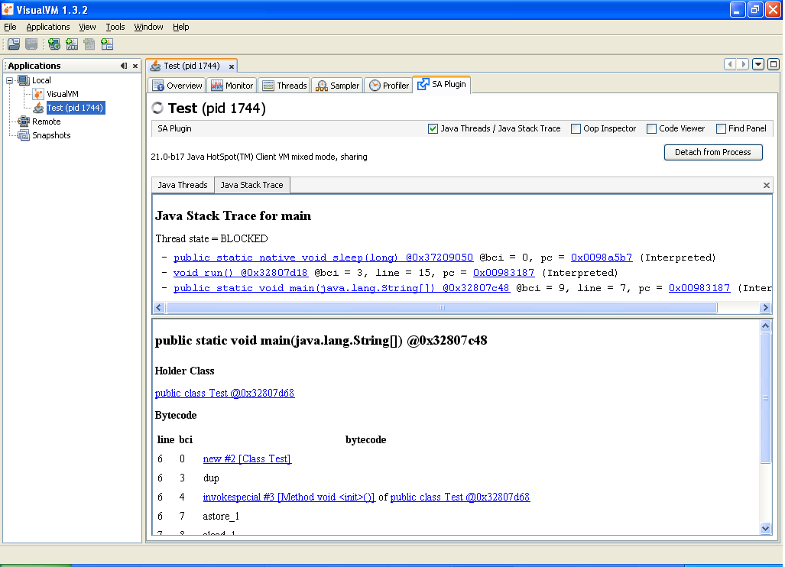
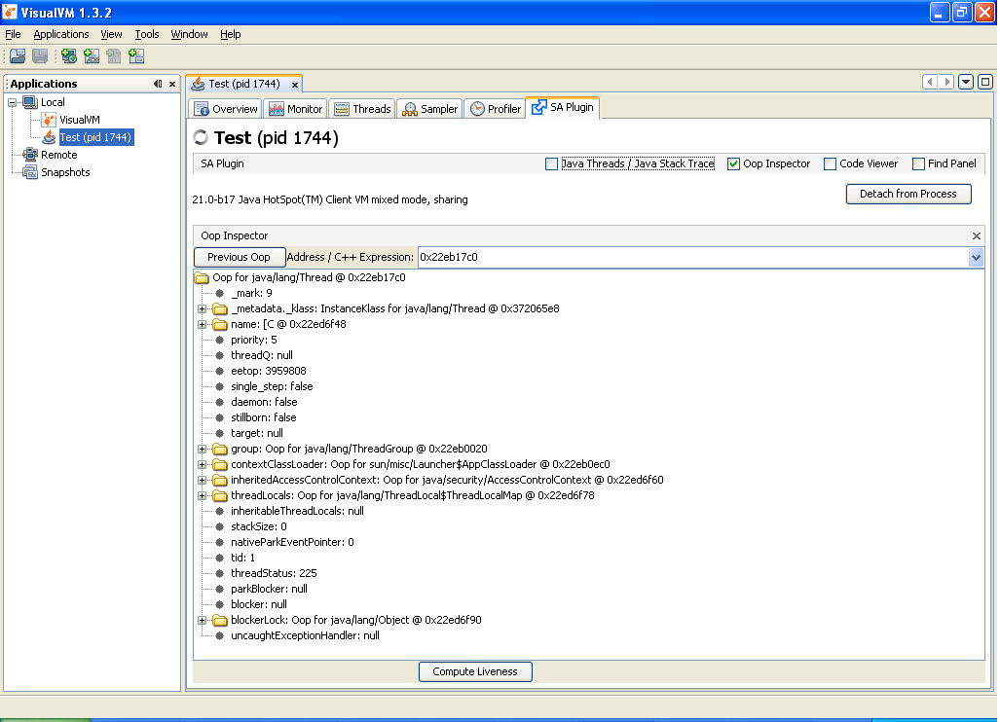
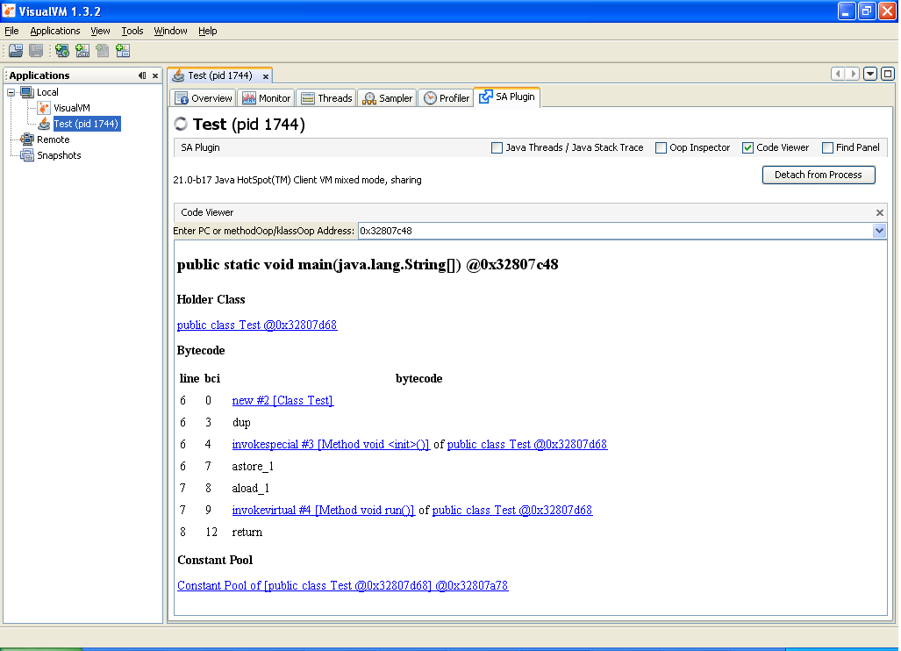
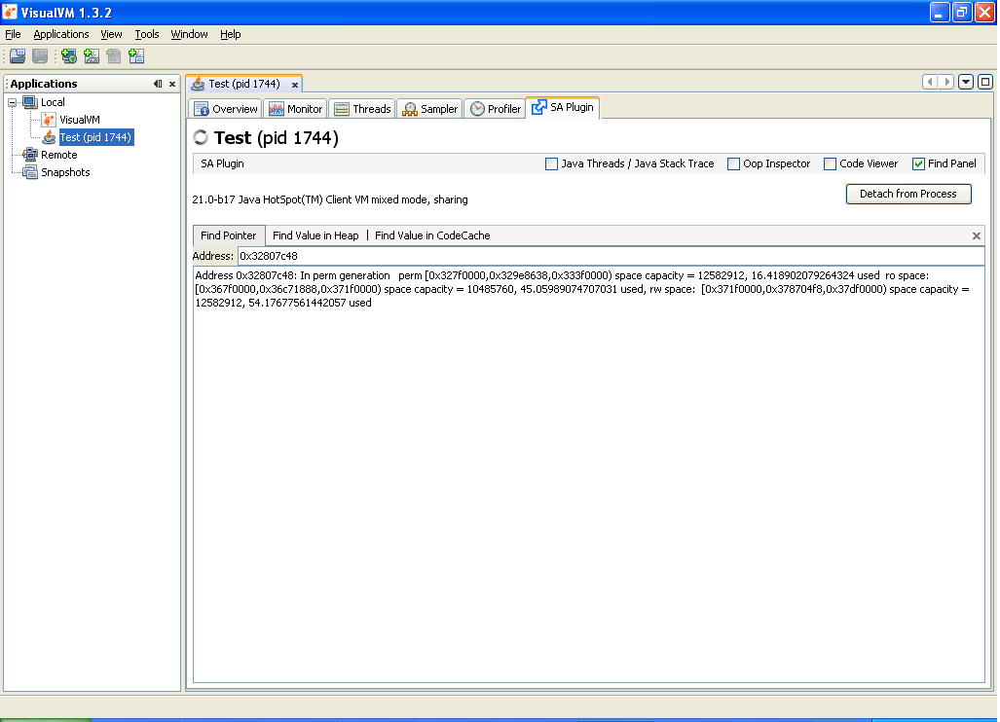

SA-Plugin для VisualVM
SA-Plugin делает ключевые возможности и утилиты Serviceability Agent доступными в VisualVM. Serviceability Agent — это внепроцессный отладчик снимков (snapshot debugger) для Hotspot JVM (Java Virtual Machine, виртуальная машина Java). С его помощью можно исследовать объекты Java и структуры данных Hotspot как в работающих процессах, так и в core files. Подробности здесь: http://www.usenix.org/events/jvm01/full_papers/russell/russell_html/index.html
SA-Plugin переносит эти мощные возможности Serviceability Agent в VisualVM — универсальный инструмент устранения неполадок Java. Этот plugin (плагин) делает утилиты SA доступными на следующих четырёх панелях VisualVM:
Java Threads / Java Stack Trace:
- Эта панель показывает все потоки Java в процессе.
- Двойной щелчок по любому потоку или нажатие значка Open Inspector (Открыть инспектор) на панели Java Threads открывает панель Oop Inspector, где видны внутренние детали объекта потока.
- Нажатие значка Show Stack Trace (Показать трассировку стека) на панели Java Threads показывает трассировку стека выбранного потока.
Oop Inspector:
- Все объекты Java в Hotspot VM представлены как Oops — 'Ordinary Object Pointer' (обычный указатель на объект). Панель Oop Inspector показывает детали Oops. Возможность видеть все внутренние поля любого объекта Java очень помогает при отладке.
Code Viewer:
- Показывает объект method/klass, если данный адрес — methodOop/klassOop, и скомпилированный код, если данный адрес — PC в скомпилированном коде.
Find Panel:
- Find Pointer: показывает, где указатель лежит в памяти процесса, например
Address 0x10100088: In new generation eden [0x10010000,0x1001e950,0x100f0000) space capacity = 917504, 6.509835379464286 used from [0x10100000,0x10110000,0x10110000) space capacity = 65536, 100.0 used to [0x100f0000,0x100f0000,0x10100000) space capacity = 65536, 0.0 used - Find Value in Heap: показывает все места, где данный адрес встречается в Java Heap (куче Java)
- Find Value in CodeCache : показывает все места, где данный адрес встречается в codecache компилятора.
Как установить SAPlugin:
- В главном меню VisualVM выберите Tools (Инструменты) | Plugins (плагины) — откроется диалог Plugins.
- Перейдите на вкладку Available Plugins (Доступные плагины) и выберите SAPlugin.
- Нажмите кнопку Install (Установить), просмотрите и примите лицензию SAPlugin и дождитесь загрузки и установки плагина.
Как пользоваться
- Запустите процесс, который нужно исследовать с SAPlugin, используя JDK (Java Development Kit, комплект разработки Java), в котором есть двоичные файлы SA.
например, на Solaris-Sparc sa-jdi.jar и libsaproc.so должны быть в каталогах lib/ и jre/lib/sparc/ соответственно. - Дважды щёлкните процесс в VisualVM. Если SAPlugin установлен, в VisualVM появится также вкладка SA Plugin.
- На вкладке SA Plugin нажмите Attach to Process (Подключиться к процессу). Это подключит Serviceability Agent к процессу и откроет панель Java Threads Panel, а также остальные три панели в скрытом режиме. Учтите, что это может занять несколько секунд.
- Другие вкладки подключённого процесса будут недоступны, пока SAPlugin присоединён к процессу, поэтому перед использованием остальных вкладок в VisualVM нужно отсоединить SA Plugin от процесса. Когда SA Plugin подключается к процессу, появляется сообщение с этой информацией.

- Теперь можно смотреть Java Threads, их трассировки стека, любой Oop, искать любой адрес в куче и смотреть скомпилированный код по любому адресу и т. д.
- Нажмите Detach from Process (Отсоединиться от процесса), чтобы отключить агент от процесса.
- SAPlugin также работает с core dumps в VisualVM.

Поддерживаемые версии JDK
- 1.7.0 на всех платформах.
- 6u17 и новее на Solaris и Linux (потому что двоичные файлы SA не поставляются с jdk6 на Windows)
Java Threads

Java Stack Trace

Oop Inspector

Code Viewer

Find Panel
